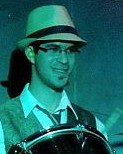
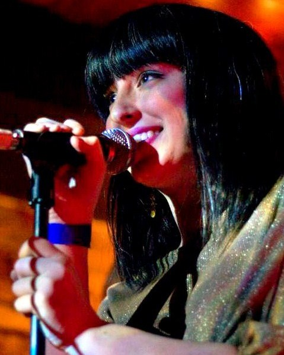
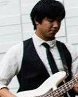
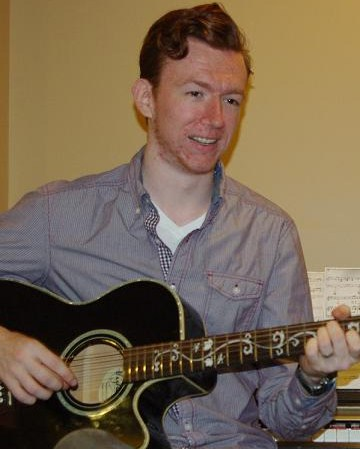
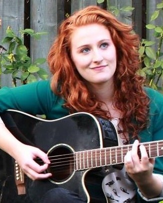

Musicians@Ryerson is Ryerson's only student group for musicians, whether instrumentalists, vocalists, or even djs. Our goals are to create a network of all musicians on campus to meet, form bands, and discuss anything music-related; provide opportunities for performing on campus, either informally in open jams or in formal performances; and give Ryerson musicians a chance to learn and grow musically, for instance in workshops run by experts in the field.
 |
 |
 |
 |
 |
Eli Vandersluis President |
Rebeca Ortiz Vice President |
Juan Udarbe Treasure |
Mark Parrott Performance Chair |
Brittany Starkman Creative Media Director |
2012-2013:
Best New Student Group
Best Membership Engagement (Runner-Up)
Student Group Partner of the Year (1st Runner-Up)
"This group is a wicked tool for networking with other musicians. I met my band because of this group and I'm so grateful. I've also jammed with other bands because of this group. This group is pretty much responsible for the inception of my university music career."
- Salvatron Maio
November 6, 2013: The Sound of Success by Behdad Mahichi, Eyeopener.
October 25, 2013: Musicians@Ryerson Open Mics by Tiana DeNicola, Ryerson Student Life.
March 19, 2013: One, two, three, hit it: Musicians are in the house by Kailah Bharath, Ryersonian.
March 15, 2013: Student group: Musicians at Ryerson by Dillon Li - Blog about the Unconventional Instrument Night.
February 7, 2013: And all that jazz: Making a living in music by Erica Igreja and Gabby Rodrigues, Ryersonian - Covering the Jazz workshop with Ron Davis and Mike Downes.
February 6, 2013: Jazz liveblog: Making Music and Making a Living in Music by Deepika Shewaramani, Jacqueline Hunter, Prajakta Dhopade, and Tania Peralta - Covering the Jazz workshop with Ron Davis and Mike Downes.
November 7, 2012: Music makers and shakers unite by Sam Rashid, Ryersonian - Covering the drum workshop with Max Senitt.
September 4, 2012: Come Together: A Meeting Place for Musicians by Nadya Domingo, Ryerson Folio